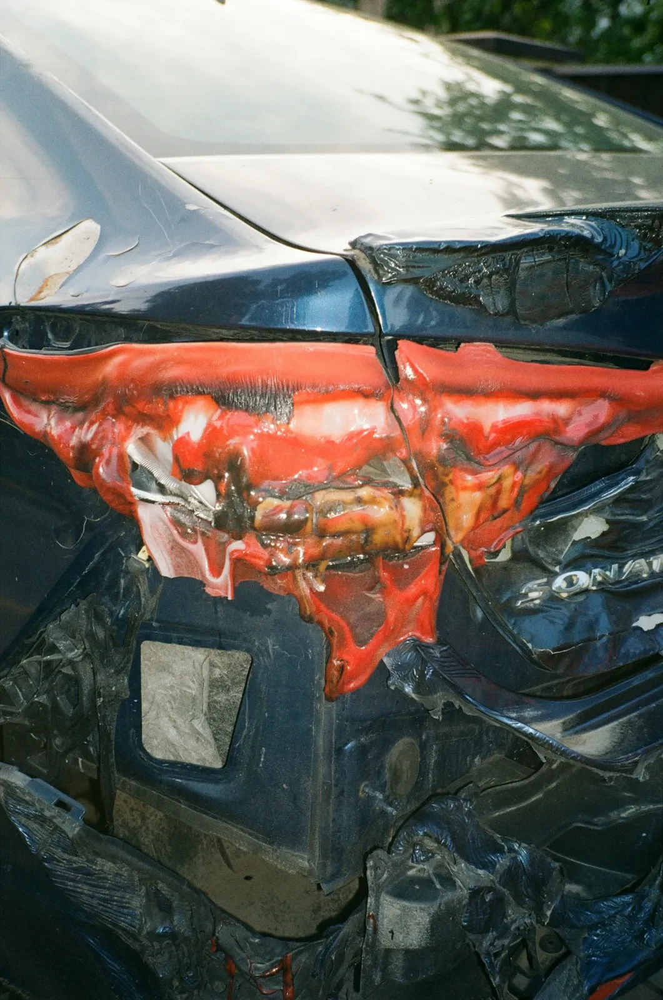
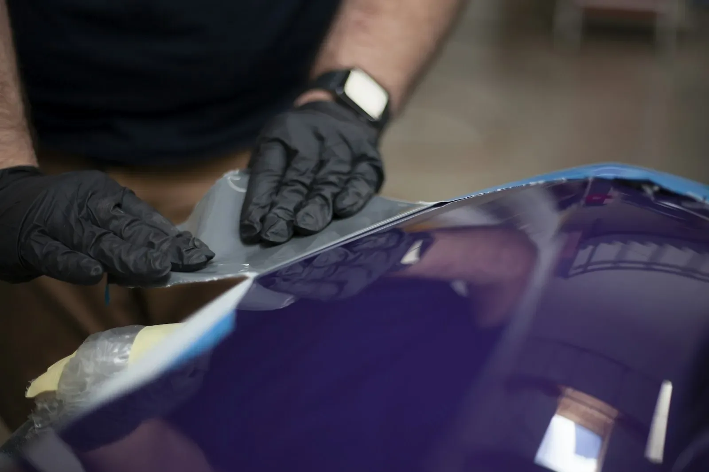
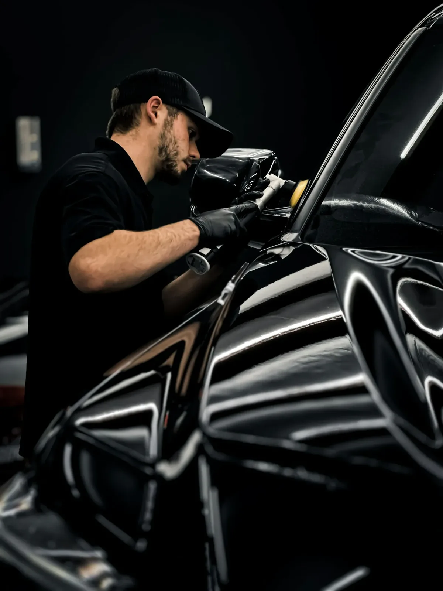

Herstellingen
Van een krasje tot een flinke klap.
Je wagen wordt bekeken, je hoort wat er moet gebeuren, en pas dan wordt eraan begonnen.

Na een aanrijding
Bumpers, spatborden en deuren herstellen of vervangen.

Deuken en krassen
Parkeerschade of een tik tegen een paal.

Spuitwerk
Afgestemd op de kleur van je wagen.

Polijsten
Tot de lak overal gelijk glanst.
Weet je niet wat het wordt?
Stuur een foto via WhatsApp. Dan heb je snel een eerste idee, zonder dat je moet langskomen.